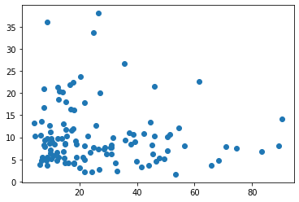
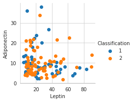
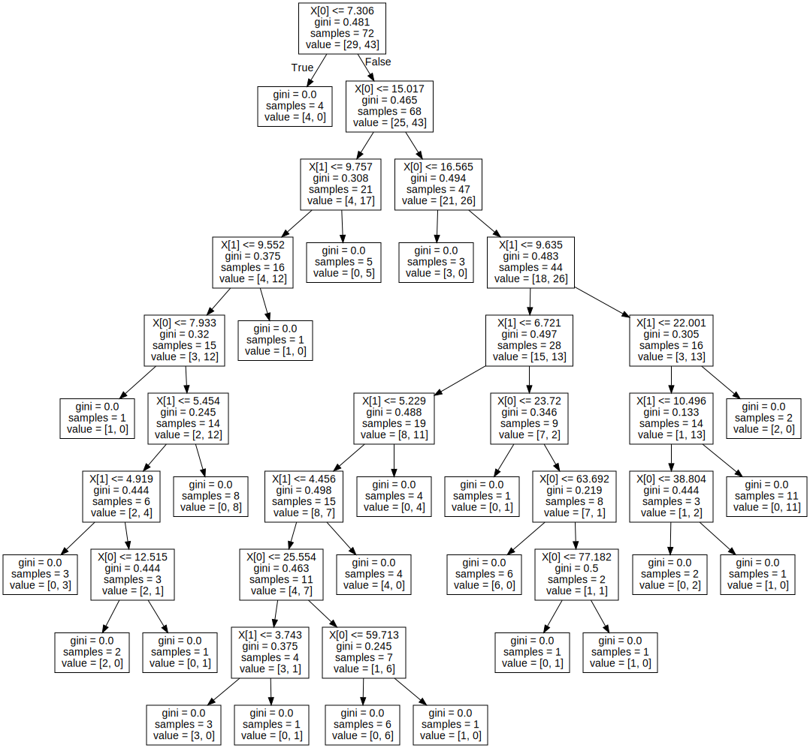
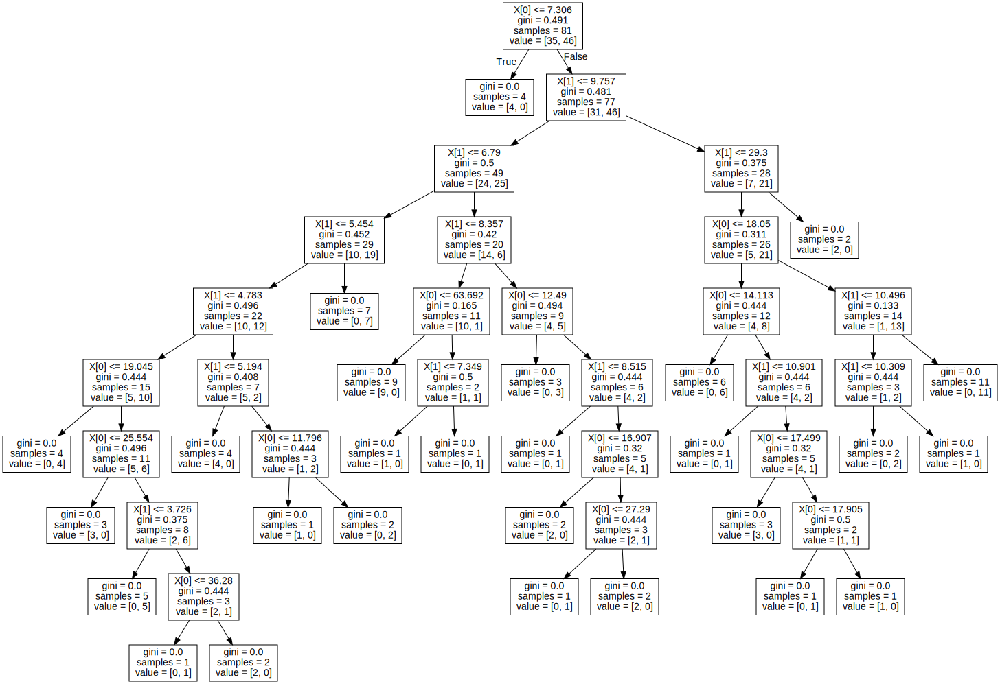

UTS
UTS#
import pandas as pd
import math
dataUTS = pd.read_csv("https://raw.githubusercontent.com/ZuniAmandaDewi/dataset/main/dataR2.csv")
dataUTS
| Age | BMI | Glucose | Insulin | HOMA | Leptin | Adiponectin | Resistin | MCP.1 | Classification | |
|---|---|---|---|---|---|---|---|---|---|---|
| 0 | 48 | 23.500000 | 70 | 2.707 | 0.467409 | 8.8071 | 9.702400 | 7.99585 | 417.114 | 1 |
| 1 | 83 | 20.690495 | 92 | 3.115 | 0.706897 | 8.8438 | 5.429285 | 4.06405 | 468.786 | 1 |
| 2 | 82 | 23.124670 | 91 | 4.498 | 1.009651 | 17.9393 | 22.432040 | 9.27715 | 554.697 | 1 |
| 3 | 68 | 21.367521 | 77 | 3.226 | 0.612725 | 9.8827 | 7.169560 | 12.76600 | 928.220 | 1 |
| 4 | 86 | 21.111111 | 92 | 3.549 | 0.805386 | 6.6994 | 4.819240 | 10.57635 | 773.920 | 1 |
| ... | ... | ... | ... | ... | ... | ... | ... | ... | ... | ... |
| 111 | 45 | 26.850000 | 92 | 3.330 | 0.755688 | 54.6800 | 12.100000 | 10.96000 | 268.230 | 2 |
| 112 | 62 | 26.840000 | 100 | 4.530 | 1.117400 | 12.4500 | 21.420000 | 7.32000 | 330.160 | 2 |
| 113 | 65 | 32.050000 | 97 | 5.730 | 1.370998 | 61.4800 | 22.540000 | 10.33000 | 314.050 | 2 |
| 114 | 72 | 25.590000 | 82 | 2.820 | 0.570392 | 24.9600 | 33.750000 | 3.27000 | 392.460 | 2 |
| 115 | 86 | 27.180000 | 138 | 19.910 | 6.777364 | 90.2800 | 14.110000 | 4.35000 | 90.090 | 2 |
116 rows × 10 columns
##Naive Bayes
# Memisahkan dataset dalam variabel independen dan dependen
X = dataUTS.iloc[:,:4].values
y = dataUTS['Classification'].values
# Memisahkan dataset menjadi Training set dan Test set
from sklearn.model_selection import train_test_split
X_train, X_test, y_train, y_test = train_test_split(X, y, test_size = 0.20, random_state = 82)
# Fitur Scaling untuk membawa variabel dalam satu skala
from sklearn.preprocessing import StandardScaler
sc = StandardScaler()
X_train = sc.fit_transform(X_train)
X_test = sc.transform(X_test)
# Memasang Klasifikasi Naive Bayes ke set Pelatihan dengan kernel linier
from sklearn.naive_bayes import GaussianNB
nvclassifier = GaussianNB()
nvclassifier.fit(X_train, y_train)
GaussianNB()
# Memprediksi hasil set Tes
y_pred = nvclassifier.predict(X_test)
print(y_pred)
[1 1 1 1 1 1 2 1 1 2 1 1 1 1 1 1 1 2 1 1 1 1 2 2]
import numpy as np
# melihat nilai aktual dan prediksi berdampingan
y_compare = np.vstack((y_test,y_pred)).T
# nilai aktual di sisi kiri dan nilai prediksi di sisi kanan
# mencetak 5 nilai teratas
y_compare[:5,:]
array([[2, 1],
[1, 1],
[2, 1],
[2, 1],
[1, 1]])
# Membuat Matriks confusion
from sklearn.metrics import confusion_matrix
cm = confusion_matrix(y_test, y_pred)
print(cm)
[[10 1]
[ 9 4]]
# menemukan akurasi dari matriks confusion
a = cm.shape
corrPred = 0
falsePred = 0
for row in range(a[0]):
for c in range(a[1]):
if row == c:
corrPred +=cm[row,c]
else:
falsePred += cm[row,c]
print('Correct predictions: ', corrPred)
print('False predictions', falsePred)
print ('\n\nAccuracy of the Naive Bayes Clasification is: ', corrPred/(cm.sum()))
Correct predictions: 14
False predictions 10
Accuracy of the Naive Bayes Clasification is: 0.5833333333333334
##Decision Tree
import matplotlib.pyplot as plt
import seaborn as sns
#mengetahui jumlah data setiap class
dataUTS.Classification.value_counts()
2 64
1 52
Name: Classification, dtype: int64
#Memvisualisasikan fitur kumpulan data untuk menemukan pola untuk menyelesaikan tugas
plt.scatter(dataUTS['Leptin'],dataUTS['Adiponectin'])
plt.show()

#Menggunakan Seaborn lib untuk memvisualisasikan 2 fitur berdasarkan variabel target.
sns.set_style('whitegrid')
sns.FacetGrid(dataUTS, hue = 'Classification') \
.map(plt.scatter, 'Leptin','Adiponectin') \
.add_legend()
plt.show()

dataUTS.info()
<class 'pandas.core.frame.DataFrame'>
RangeIndex: 116 entries, 0 to 115
Data columns (total 10 columns):
# Column Non-Null Count Dtype
--- ------ -------------- -----
0 Age 116 non-null int64
1 BMI 116 non-null float64
2 Glucose 116 non-null int64
3 Insulin 116 non-null float64
4 HOMA 116 non-null float64
5 Leptin 116 non-null float64
6 Adiponectin 116 non-null float64
7 Resistin 116 non-null float64
8 MCP.1 116 non-null float64
9 Classification 116 non-null int64
dtypes: float64(7), int64(3)
memory usage: 9.2 KB
#Sekarang coba buat model untuk menyelesaikan tugas kita
#Sesuai analisis kami, kami tidak dapat menemukan banyak informasi dari fitur baru yang dapat membantu dalam memecahkan masalah kami ...
#Untuk menyelesaikan tugas kami, saya telah memilih beberapa fitur di antara semuanya untuk membangun model terbaik kami..
'''Impor beberapa perpustakaan untuk membuat pengklasifikasi pohon keputusan dan memvisualisasikan struktur pohon'''
from sklearn import tree
import graphviz
from sklearn.tree import DecisionTreeClassifier
from sklearn.model_selection import train_test_split, cross_val_score
'''Di sini kita memisahkan variabel independen atau variabel target dari dataset Iris'''
X = dataUTS[['Leptin', 'Adiponectin']]
y = dataUTS['Classification']
#Sebelum melatih model, kami telah membagi data kami menjadi Kumpulan Data Latihan Aktual dan Kumpulan Data Uji Aktual untuk tujuan pelatihan dan validasi...
Xtrain, Xtest, Ytrain, Ytest = train_test_split(X, y, test_size=0.30, random_state=42)
#spliting data into validation train and validation test
Xt, Xcv, Yt, Ycv = train_test_split(Xtrain, Ytrain, test_size=0.10, random_state=42)
'''Sekarang kami telah membuat pengklasifikasi pohon keputusan dan melatihnya dengan dataset pelatihan.'''
Iris_clf = DecisionTreeClassifier(criterion='gini',min_samples_split=2)
Iris_clf.fit(Xt, Yt)
#Memvisualisasikan Pohon yang terbentuk pada dataset kereta
tree.plot_tree(Iris_clf)
[Text(0.3804347826086957, 0.95, 'X[0] <= 7.306\ngini = 0.481\nsamples = 72\nvalue = [29, 43]'),
Text(0.33695652173913043, 0.85, 'gini = 0.0\nsamples = 4\nvalue = [4, 0]'),
Text(0.42391304347826086, 0.85, 'X[0] <= 15.017\ngini = 0.465\nsamples = 68\nvalue = [25, 43]'),
Text(0.17391304347826086, 0.75, 'X[1] <= 9.757\ngini = 0.308\nsamples = 21\nvalue = [4, 17]'),
Text(0.13043478260869565, 0.65, 'X[1] <= 9.552\ngini = 0.375\nsamples = 16\nvalue = [4, 12]'),
Text(0.08695652173913043, 0.55, 'X[0] <= 7.933\ngini = 0.32\nsamples = 15\nvalue = [3, 12]'),
Text(0.043478260869565216, 0.45, 'gini = 0.0\nsamples = 1\nvalue = [1, 0]'),
Text(0.13043478260869565, 0.45, 'X[1] <= 5.454\ngini = 0.245\nsamples = 14\nvalue = [2, 12]'),
Text(0.08695652173913043, 0.35, 'X[1] <= 4.919\ngini = 0.444\nsamples = 6\nvalue = [2, 4]'),
Text(0.043478260869565216, 0.25, 'gini = 0.0\nsamples = 3\nvalue = [0, 3]'),
Text(0.13043478260869565, 0.25, 'X[0] <= 12.515\ngini = 0.444\nsamples = 3\nvalue = [2, 1]'),
Text(0.08695652173913043, 0.15, 'gini = 0.0\nsamples = 2\nvalue = [2, 0]'),
Text(0.17391304347826086, 0.15, 'gini = 0.0\nsamples = 1\nvalue = [0, 1]'),
Text(0.17391304347826086, 0.35, 'gini = 0.0\nsamples = 8\nvalue = [0, 8]'),
Text(0.17391304347826086, 0.55, 'gini = 0.0\nsamples = 1\nvalue = [1, 0]'),
Text(0.21739130434782608, 0.65, 'gini = 0.0\nsamples = 5\nvalue = [0, 5]'),
Text(0.6739130434782609, 0.75, 'X[0] <= 16.565\ngini = 0.494\nsamples = 47\nvalue = [21, 26]'),
Text(0.6304347826086957, 0.65, 'gini = 0.0\nsamples = 3\nvalue = [3, 0]'),
Text(0.717391304347826, 0.65, 'X[1] <= 9.635\ngini = 0.483\nsamples = 44\nvalue = [18, 26]'),
Text(0.5217391304347826, 0.55, 'X[1] <= 6.721\ngini = 0.497\nsamples = 28\nvalue = [15, 13]'),
Text(0.43478260869565216, 0.45, 'X[1] <= 5.229\ngini = 0.488\nsamples = 19\nvalue = [8, 11]'),
Text(0.391304347826087, 0.35, 'X[1] <= 4.456\ngini = 0.498\nsamples = 15\nvalue = [8, 7]'),
Text(0.34782608695652173, 0.25, 'X[0] <= 25.554\ngini = 0.463\nsamples = 11\nvalue = [4, 7]'),
Text(0.2608695652173913, 0.15, 'X[1] <= 3.743\ngini = 0.375\nsamples = 4\nvalue = [3, 1]'),
Text(0.21739130434782608, 0.05, 'gini = 0.0\nsamples = 3\nvalue = [3, 0]'),
Text(0.30434782608695654, 0.05, 'gini = 0.0\nsamples = 1\nvalue = [0, 1]'),
Text(0.43478260869565216, 0.15, 'X[0] <= 59.713\ngini = 0.245\nsamples = 7\nvalue = [1, 6]'),
Text(0.391304347826087, 0.05, 'gini = 0.0\nsamples = 6\nvalue = [0, 6]'),
Text(0.4782608695652174, 0.05, 'gini = 0.0\nsamples = 1\nvalue = [1, 0]'),
Text(0.43478260869565216, 0.25, 'gini = 0.0\nsamples = 4\nvalue = [4, 0]'),
Text(0.4782608695652174, 0.35, 'gini = 0.0\nsamples = 4\nvalue = [0, 4]'),
Text(0.6086956521739131, 0.45, 'X[0] <= 23.72\ngini = 0.346\nsamples = 9\nvalue = [7, 2]'),
Text(0.5652173913043478, 0.35, 'gini = 0.0\nsamples = 1\nvalue = [0, 1]'),
Text(0.6521739130434783, 0.35, 'X[0] <= 63.692\ngini = 0.219\nsamples = 8\nvalue = [7, 1]'),
Text(0.6086956521739131, 0.25, 'gini = 0.0\nsamples = 6\nvalue = [6, 0]'),
Text(0.6956521739130435, 0.25, 'X[0] <= 77.182\ngini = 0.5\nsamples = 2\nvalue = [1, 1]'),
Text(0.6521739130434783, 0.15, 'gini = 0.0\nsamples = 1\nvalue = [0, 1]'),
Text(0.7391304347826086, 0.15, 'gini = 0.0\nsamples = 1\nvalue = [1, 0]'),
Text(0.9130434782608695, 0.55, 'X[1] <= 22.001\ngini = 0.305\nsamples = 16\nvalue = [3, 13]'),
Text(0.8695652173913043, 0.45, 'X[1] <= 10.496\ngini = 0.133\nsamples = 14\nvalue = [1, 13]'),
Text(0.8260869565217391, 0.35, 'X[0] <= 38.804\ngini = 0.444\nsamples = 3\nvalue = [1, 2]'),
Text(0.782608695652174, 0.25, 'gini = 0.0\nsamples = 2\nvalue = [0, 2]'),
Text(0.8695652173913043, 0.25, 'gini = 0.0\nsamples = 1\nvalue = [1, 0]'),
Text(0.9130434782608695, 0.35, 'gini = 0.0\nsamples = 11\nvalue = [0, 11]'),
Text(0.9565217391304348, 0.45, 'gini = 0.0\nsamples = 2\nvalue = [2, 0]')]
#Memvisualisasikan Pohon Keputusan menggunakan pustaka graphviz
dot_data = tree.export_graphviz(Iris_clf, out_file=None)
graph = graphviz.Source(dot_data)
graph

#Karena model kami telah dilatih....
#Sekarang kita dapat memvalidasi pohon keputusan kita menggunakan metode validasi silang untuk mendapatkan akurasi atau skor kinerja model kita.
print('Accuracy score is:',cross_val_score(Iris_clf, Xt, Yt, cv=3, scoring='accuracy').mean())
Accuracy score is: 0.5416666666666666
#Memeriksa data uji validasi pada model terlatih kami dan mendapatkan metrik kinerja
from sklearn.metrics import multilabel_confusion_matrix, accuracy_score
Y_hat = Iris_clf.predict(Xcv)
print('Accuracy score for validation test data is:',accuracy_score(Ycv, Y_hat))
multilabel_confusion_matrix(Ycv , Y_hat)
Accuracy score for validation test data is: 0.3333333333333333
array([[[1, 2],
[4, 2]],
[[2, 4],
[2, 1]]])
#Memeriksa kinerja model kami pada data uji aktual yang tidak terlihat..
YT_hat = Iris_clf.predict(Xtest)
YT_hat
print('Model Accuracy Score on totally unseen data(Xtest) is:',accuracy_score(Ytest, YT_hat)*100,'%')
multilabel_confusion_matrix(Ytest , YT_hat)
Model Accuracy Score on totally unseen data(Xtest) is: 57.14285714285714 %
array([[[10, 8],
[ 7, 10]],
[[10, 7],
[ 8, 10]]])
'''Model pelatihan pada data kereta yang sebenarnya... '''
Iris_Fclf = DecisionTreeClassifier(criterion='gini',min_samples_split=2)
Iris_Fclf.fit(Xtrain, Ytrain)
#Visualisasikan struktur pohon..
tree.plot_tree(Iris_Fclf)
[Text(0.54, 0.95, 'X[0] <= 7.306\ngini = 0.491\nsamples = 81\nvalue = [35, 46]'),
Text(0.5, 0.85, 'gini = 0.0\nsamples = 4\nvalue = [4, 0]'),
Text(0.58, 0.85, 'X[1] <= 9.757\ngini = 0.481\nsamples = 77\nvalue = [31, 46]'),
Text(0.32, 0.75, 'X[1] <= 6.79\ngini = 0.5\nsamples = 49\nvalue = [24, 25]'),
Text(0.2, 0.65, 'X[1] <= 5.454\ngini = 0.452\nsamples = 29\nvalue = [10, 19]'),
Text(0.16, 0.55, 'X[1] <= 4.783\ngini = 0.496\nsamples = 22\nvalue = [10, 12]'),
Text(0.08, 0.45, 'X[0] <= 19.045\ngini = 0.444\nsamples = 15\nvalue = [5, 10]'),
Text(0.04, 0.35, 'gini = 0.0\nsamples = 4\nvalue = [0, 4]'),
Text(0.12, 0.35, 'X[0] <= 25.554\ngini = 0.496\nsamples = 11\nvalue = [5, 6]'),
Text(0.08, 0.25, 'gini = 0.0\nsamples = 3\nvalue = [3, 0]'),
Text(0.16, 0.25, 'X[1] <= 3.726\ngini = 0.375\nsamples = 8\nvalue = [2, 6]'),
Text(0.12, 0.15, 'gini = 0.0\nsamples = 5\nvalue = [0, 5]'),
Text(0.2, 0.15, 'X[0] <= 36.28\ngini = 0.444\nsamples = 3\nvalue = [2, 1]'),
Text(0.16, 0.05, 'gini = 0.0\nsamples = 1\nvalue = [0, 1]'),
Text(0.24, 0.05, 'gini = 0.0\nsamples = 2\nvalue = [2, 0]'),
Text(0.24, 0.45, 'X[1] <= 5.194\ngini = 0.408\nsamples = 7\nvalue = [5, 2]'),
Text(0.2, 0.35, 'gini = 0.0\nsamples = 4\nvalue = [4, 0]'),
Text(0.28, 0.35, 'X[0] <= 11.796\ngini = 0.444\nsamples = 3\nvalue = [1, 2]'),
Text(0.24, 0.25, 'gini = 0.0\nsamples = 1\nvalue = [1, 0]'),
Text(0.32, 0.25, 'gini = 0.0\nsamples = 2\nvalue = [0, 2]'),
Text(0.24, 0.55, 'gini = 0.0\nsamples = 7\nvalue = [0, 7]'),
Text(0.44, 0.65, 'X[1] <= 8.357\ngini = 0.42\nsamples = 20\nvalue = [14, 6]'),
Text(0.36, 0.55, 'X[0] <= 63.692\ngini = 0.165\nsamples = 11\nvalue = [10, 1]'),
Text(0.32, 0.45, 'gini = 0.0\nsamples = 9\nvalue = [9, 0]'),
Text(0.4, 0.45, 'X[1] <= 7.349\ngini = 0.5\nsamples = 2\nvalue = [1, 1]'),
Text(0.36, 0.35, 'gini = 0.0\nsamples = 1\nvalue = [1, 0]'),
Text(0.44, 0.35, 'gini = 0.0\nsamples = 1\nvalue = [0, 1]'),
Text(0.52, 0.55, 'X[0] <= 12.49\ngini = 0.494\nsamples = 9\nvalue = [4, 5]'),
Text(0.48, 0.45, 'gini = 0.0\nsamples = 3\nvalue = [0, 3]'),
Text(0.56, 0.45, 'X[1] <= 8.515\ngini = 0.444\nsamples = 6\nvalue = [4, 2]'),
Text(0.52, 0.35, 'gini = 0.0\nsamples = 1\nvalue = [0, 1]'),
Text(0.6, 0.35, 'X[0] <= 16.907\ngini = 0.32\nsamples = 5\nvalue = [4, 1]'),
Text(0.56, 0.25, 'gini = 0.0\nsamples = 2\nvalue = [2, 0]'),
Text(0.64, 0.25, 'X[0] <= 27.29\ngini = 0.444\nsamples = 3\nvalue = [2, 1]'),
Text(0.6, 0.15, 'gini = 0.0\nsamples = 1\nvalue = [0, 1]'),
Text(0.68, 0.15, 'gini = 0.0\nsamples = 2\nvalue = [2, 0]'),
Text(0.84, 0.75, 'X[1] <= 29.3\ngini = 0.375\nsamples = 28\nvalue = [7, 21]'),
Text(0.8, 0.65, 'X[0] <= 18.05\ngini = 0.311\nsamples = 26\nvalue = [5, 21]'),
Text(0.68, 0.55, 'X[0] <= 14.113\ngini = 0.444\nsamples = 12\nvalue = [4, 8]'),
Text(0.64, 0.45, 'gini = 0.0\nsamples = 6\nvalue = [0, 6]'),
Text(0.72, 0.45, 'X[1] <= 10.901\ngini = 0.444\nsamples = 6\nvalue = [4, 2]'),
Text(0.68, 0.35, 'gini = 0.0\nsamples = 1\nvalue = [0, 1]'),
Text(0.76, 0.35, 'X[0] <= 17.499\ngini = 0.32\nsamples = 5\nvalue = [4, 1]'),
Text(0.72, 0.25, 'gini = 0.0\nsamples = 3\nvalue = [3, 0]'),
Text(0.8, 0.25, 'X[0] <= 17.905\ngini = 0.5\nsamples = 2\nvalue = [1, 1]'),
Text(0.76, 0.15, 'gini = 0.0\nsamples = 1\nvalue = [0, 1]'),
Text(0.84, 0.15, 'gini = 0.0\nsamples = 1\nvalue = [1, 0]'),
Text(0.92, 0.55, 'X[1] <= 10.496\ngini = 0.133\nsamples = 14\nvalue = [1, 13]'),
Text(0.88, 0.45, 'X[1] <= 10.309\ngini = 0.444\nsamples = 3\nvalue = [1, 2]'),
Text(0.84, 0.35, 'gini = 0.0\nsamples = 2\nvalue = [0, 2]'),
Text(0.92, 0.35, 'gini = 0.0\nsamples = 1\nvalue = [1, 0]'),
Text(0.96, 0.45, 'gini = 0.0\nsamples = 11\nvalue = [0, 11]'),
Text(0.88, 0.65, 'gini = 0.0\nsamples = 2\nvalue = [2, 0]')]
#Pembuatan pohon keputusan akhir untuk diterapkan dalam kasus dunia nyata....
dot_data = tree.export_graphviz(Iris_Fclf, out_file=None)
graph = graphviz.Source(dot_data)
graph

#Memeriksa performa model pada data Uji Aktual...
YT_Fhat = Iris_Fclf.predict(Xtest)
YT_Fhat
print('Model Accuracy Score on totally unseen data(Xtest) is:',accuracy_score(Ytest, YT_Fhat)*100,'%')
multilabel_confusion_matrix(Ytest , YT_Fhat)
Model Accuracy Score on totally unseen data(Xtest) is: 45.714285714285715 %
array([[[10, 8],
[11, 6]],
[[ 6, 11],
[ 8, 10]]])
#Pengujian untuk poin baru kecuali dari Dataset
Test_point = [[10.4,3.0],
[6.5,2.8],
[5.1,2.5],
[5.1,3.3],
[6.0,2.7],
[6.0,2.2]]
print(Iris_Fclf.predict(Test_point))
[2 1 1 1 1 1]
/usr/local/lib/python3.7/dist-packages/sklearn/base.py:451: UserWarning: X does not have valid feature names, but DecisionTreeClassifier was fitted with feature names
"X does not have valid feature names, but"